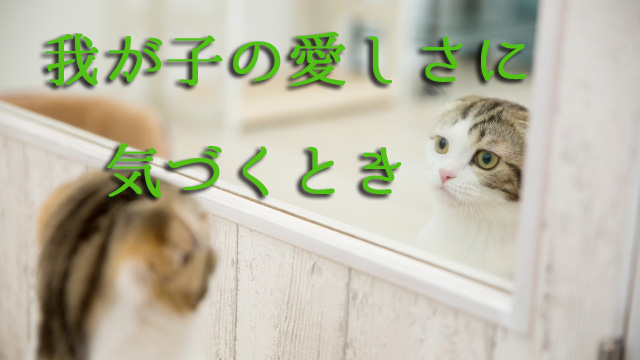

私たちは都合の悪いことが起きると相手を変えようとするがうまく行かない。遠回しに注意したり、説得したり時には説教や怒りをぶつけてみても「相手が悪い」と考えている限り事態が好転することはない。
相手に非があり、自分はそれを正しているのだという想いがある限り相手の姿勢が根本的に変わることはないということ。
たとえば子どもが言うことを聞かない、思い通りにならないとき多くの親は子どもに「問題がある」と考える。それは確かにそうなのだろう。
部屋がいつも汚い。試験近いのに勉強せず寝ているかゲームばかりしている。叱るとふてクサレる。口答えする。
どう見ても子どもの態度に問題があるとしか言えない。このまま放置しておいてよいのか。あまりうるさく言いたくはないが、これ以上黙って見過ごすわけにもいかない。第一それでは親としての義務を果たしていないことになる。
多くの親はそう考えて子どもを「どうにかしよう」とアレコレ働きかけるが、やはりうまくいかないのだ。
こういうときどうすればよいのか。
私の答えはこうだ。当面子どものことは放っておいて親は自分のやるべきことに集中する。その際子どもへの心配や感情（このまま放置したらますます悪い方へ行くのではという怖れやイライラ）はひとまず脇へ置く。
そうしてしばらく子どものことを頭の中から追い出し、自分のやるべきことを淡々とこなしていく。うまくいけばこれだけで子どもの様子に変化が起きるが、たとえ起きなくても構わない。大切なのは子どもとの間に心理的距離をとること。ここにスペース（空間）が生まれることで親と子の心理的葛藤が中和される。
さて、その上で親は次のように自問して欲しい。
「自分は子どもに問題があると思っているがそれは果たして本当に問題なのだろうか」
あるいは
「子どもの問題は自分に対するメッセージではないのか。だとしたらどんなメッセージなのか」
すぐに答えを探そうとしてはいけない。その疑問としばらく共に居て欲しい。
我が子は自分を映し出す鏡
このとき大切なのは、我が子を自分を映し出す鏡と思ってみることだ。我が子の「問題」を自分のある面を映す鏡と想像してみるのだ。ヒントはそのときの感情にある。
無計画でダラシない子どもの様子に焦りのような感情を覚えるなら、何事も完璧にこなそうとしながらそうできない自分に対する苛立ちがあるのかも知れない。
「やるべきことをやっていない」と我が子に怒りを感じているなら、それは自分がやるべきと思っていながら放置していることがあり、そのことを内心で咎めているのかも知れない。
あるいは「子どもが勉強しないことが心配で仕方ない」なら、自分も勉強しなかった後悔やら過去の失敗などの記憶が原因となっているのかも知れない。
つまり相手（子ども）の「問題」を自分に対するメッセージと捉えなおしてみるということだ。「子どもは私に何を教えようとしているのか」そのように発想を転換してみる。そうすると子ども（相手）に問題があると考える自分の見方そのものが変更を迫られる。
言っておくが、これは子どもばかり責めるなとか親も反省しろという意味ではない。そうではなく子どもと自分の関係をニュートラル（中立の位置）に捉えなおすということだ。
当たり前だが、子どもの態度はいつも悪いわけではない。家でダラシない子も外では案外きちんとしている場合も多い。勉強しないときもあればしているときもある。そういう多様な様子を客観的に見ることなく、ネガティブな側面ばかりを親は拡大していないか気づくことが大切なのだ。
同時に子どもの行状をメッセージと受け止めることで、親も自分の内面に向き合うチャンスを得ることができる。自分の中にどんなこだわりがあるのか。世間体や見栄、つまらないプライドそして自分のやるべきことを果たしていない焦りや、もっと人生を楽しみたいと思っていながらそれができない苛立ち。そのような人生に対する不満や、すでに必要のない価値観を握りしめていないか。
あるいは子どもに対する心配や悩みを作り出すことで本当の問題（解決すべき自らの課題）から目をそむけているのではないか。
そもそもこうして内面と向き合いたくないからこそ、子どもという外側の対象に「問題」を見出しているのではないか。
このように自問をくり返していけば子どもの態度は少しずつ変化してくるだろう。
そうして最終的にやって欲しいこと。それは今度は「子どもの良いところ。長所や認めるべきところ」をノートに書き出してみる作業だ。これは多くの人に勧めて特に効果の高い方法と確信している。
今まで子どものマイナス部分ばかりにフォーカスしていた視点を逆転させ、プラス面を数え上げることでバランスをとるやり方となる。
毎日書くのが面倒ならたまにでも良い。ゲーム感覚で楽しんで書くのがコツだ。
「朝おはようと言った」「言わなくても部屋を片づけた」「機嫌が良かった」などささいなこと、当たり前のことでよいから書き連ねる。一ヵ月も続ければ劇的な変化が起こるだろう。
変化は子どもと親の心境その両方に起こるだろう。
二元論のワナから脱出する
これは親子関係だけでなく、あらゆる人間関係にも応用することができる。
私たちは不都合な事態に遭遇すると相手に問題があると考える。「あの人はどうして分かってくれないのだろう」「どうしていつも同じようなミスを犯すのだろう」「何て自分勝手なのか」そう思い、これ以上ガマンしてもダメだからと注意したり問い正し、それでもダメだと距離を置いて罪悪感を感じさせたり、何とか非を認めさそうとする。
しかしこのような試みが成功することはまずない。あなたが上司なら職権に物を言わせて従わせることも可能かも知れないが、結局のところ根本的解決には至らないだろう。
これは「相手が悪く自分は正しい」という善悪二元論に立っているからだ。二元論に立つ限り「善悪」の対立は鋭くなるばかりだ。あなたが正義（善）を掲げるほど相手（悪）はその勢いを増す。なぜならあなたが正義であり続けるためには悪の存在が必要だからだ。こうして対立は永遠に続く。
このループから逃れるには二元論に立つことを止めなければならない。あなたが「正しさ」を手放せば二元論のワナから脱け出すことができる。親子、夫婦、同僚、上司（部下）、近所の人や友人。あなたの目の前にいる人は全員があなたを映し出す鏡である。あなたに大切なことを伝えるメッセンジャーだ。
特にあなたを悩ます手強い相手こそ、大切なことをあなたに学ばせる使命を抱えていると考えるべきだ。対立相手と見なさず「この人は私の中の何を映し出しているのだろう。この人から何を学べばよいのだろう」と考えてみる。
嫌な奴でも受け入れろということではない。好きになれとか妥協しろと言っているのでもない。
いわば「学ぶべき教材」とでも見なそうということ。そう立場を変えれば、不思議なことにその相手の態度がいつの間にか変わったり自然と目の前から姿を消してしまう。
つまりその相手とはあなたが握りしめていたからこそ存在していたのだ。学ぶということは相手を解放することを意味している。
子どもに対しても同じだ。子どもの「問題」も親であるあなたが実は握りしめて放さないものであったのだ。
そのことに気づいたとき子どもの態度は好ましいものに変わり、あなたも「なぜあんなに心配していたのだろう」と不思議に思うだろう。
そこにはただ愛しいだけの我が子の姿があるだけだった。
あなたが我が子を解放したからだ。